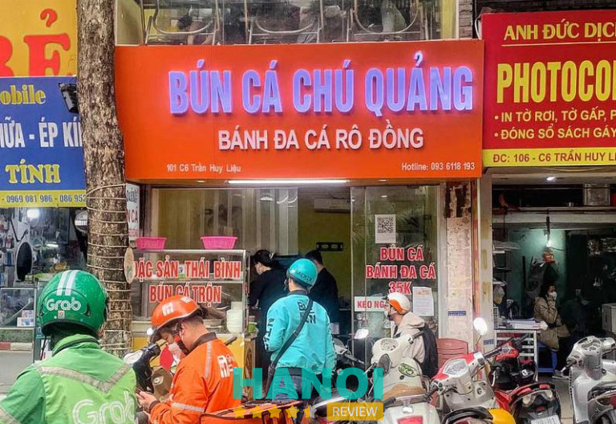
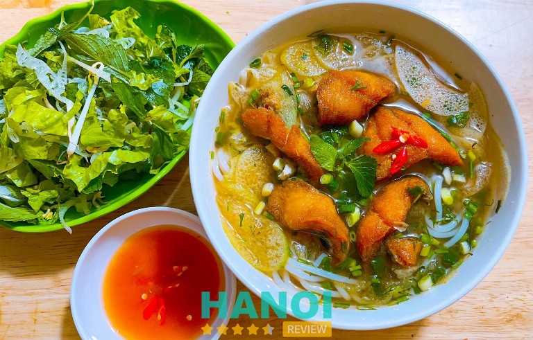
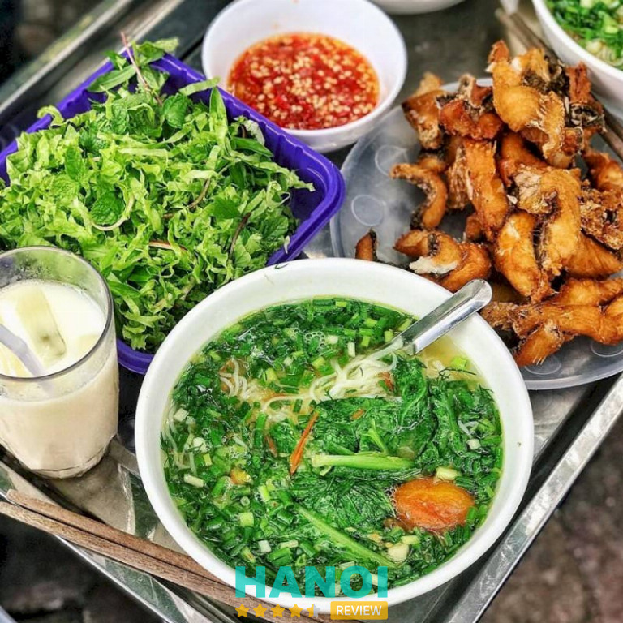
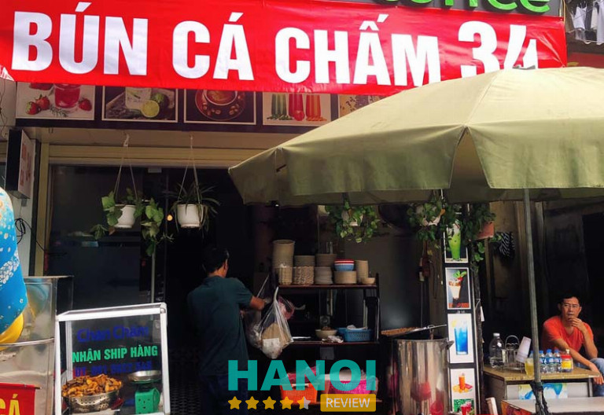
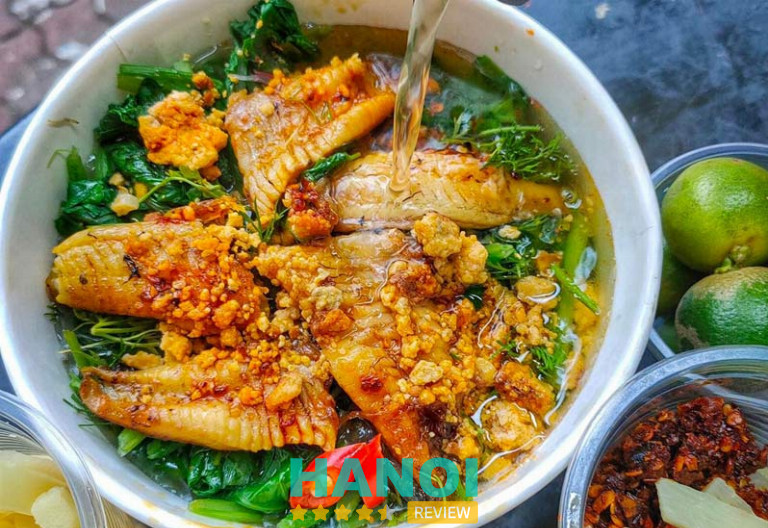
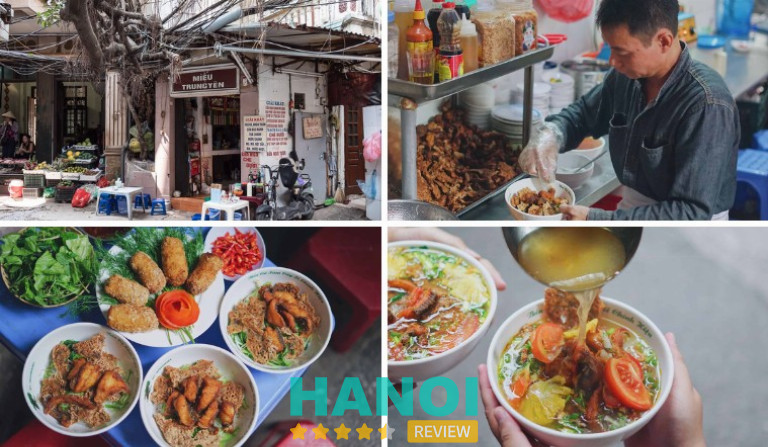
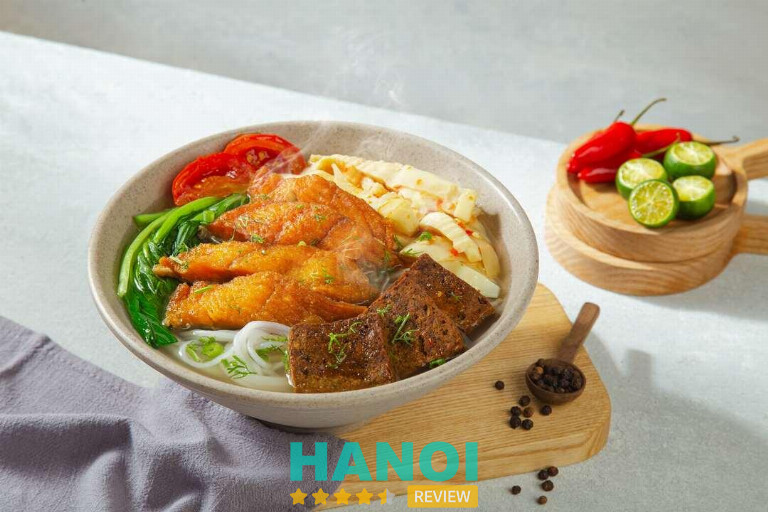
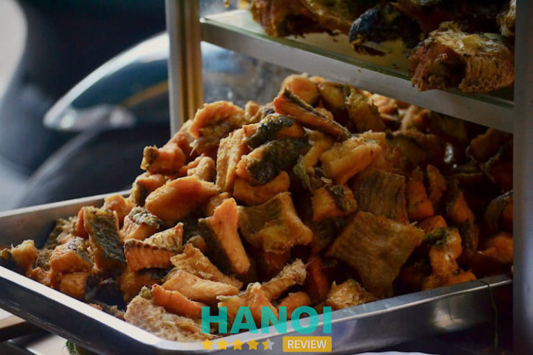
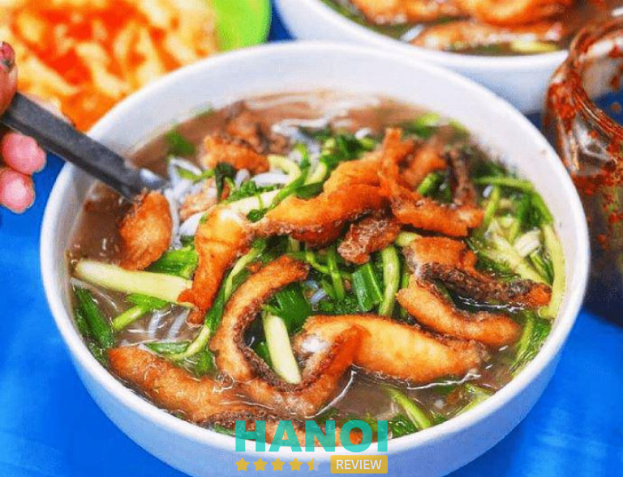

10 Quán bún cá ngon nổi tiếng tại Hà Nội lâu đời nhất
Các quán bún cá ngon nổi tiếng tại Hà Nội lâu đời vẫn luôn có sức hút đặc biệt trong lòng thực khách. Mỗi quán đều sẽ có một bí quyết riêng, mang đến hương vị thơm ngon, đậm đà và trải nghiệm khác biệt, làm say lòng bao người yêu ẩm thực.
Top 10 quán bún cá ngon nổi tiếng ở Hà Nội đông khách chọn
Dạo quanh những con phố ở Hà Nội, bạn sẽ dễ dàng bắt gặp những quán bún cá với hương thơm ngào ngạt, chứa đựng bí quyết và tâm huyết riêng của người nấu. Dưới đây là 10 địa chỉ bún cá nổi tiếng, được nhiều người yêu thích nhất, chắc chắn sẽ là lựa chọn lý tưởng cho những ai muốn khám phá ẩm thực Hà thành.
Bún cá chú Quảng – Ba Đình
Nằm trên một con phố nhộn nhịp của Hà Nội, Bún cá chú Quảng từ lâu đã trở thành địa chỉ quen thuộc cho những ai yêu thích món bún cá. Với hương vị đặc trưng, không gian sạch sẽ, gọn gàng và phong cách phục vụ nhanh nhẹn, quán đã để lại nhiều ấn tượng tốt trong lòng thực khách.
Bún cá tại đây được chế biến tỉ mỉ, mang đậm phong cách bún cá Thái Bình, một hương vị đậm đà và hài hòa, khác biệt với các quán bún cá thông thường. Cá được chiên vừa giòn vừa thơm, bên ngoài vàng ruộm, bên trong vẫn giữ được độ mềm và ngọt thịt, tạo cảm giác vô cùng hấp dẫn.
Đặc biệt, món bún và bánh đa cá trộn của quán là một trong những món mà thực khách không thể bỏ qua. Sợi bún mềm dai, kết hợp cùng cá giòn rụm, rau thơm, và nước sốt đặc trưng, tạo nên sự hài hòa giữa các nguyên liệu, mang đến một món ăn đậm đà, đầy đủ hương vị mà không cần thêm gia vị phụ.

Một điểm nhấn đặc biệt của Bún cá chú Quảng là món măng ăn kèm. Măng được ngâm chua ngọt, vừa đủ để không làm át đi hương vị của cá và bún, mà ngược lại, giúp món ăn thêm phần thanh mát và hấp dẫn. Vị chua chua ngọt ngọt của măng hòa quyện cùng nước dùng đậm đà, làm tăng thêm sức hút của món bún cá.
Không gian quán tuy không quá rộng nhưng luôn gọn gàng và sạch sẽ, tạo cảm giác thoải mái cho người ăn. Bàn ghế được sắp xếp gọn gàng. Bên cạnh đó, phong cách phục vụ nhanh nhẹn, tận tình cũng là một điểm cộng lớn giúp quán chiếm trọn tình cảm của khách hàng.
Thông tin liên hệ:
- Địa chỉ: 101c6 Trần Huy Liệu, P. Giảng Võ, Q. Ba Đình, Hà Nội
- Điện thoại: 0832 66 99 55
- Facebook: FB.com/buncachuquangvn
Quán bún cá cay Hải Phòng – Đống Đa
Quán bún cá cay Hải Phòng là địa chỉ nổi tiếng tại Hà Nội với món bún cá cay chuẩn vị Hải Phòng. Bún cá tại đây được đánh giá cao bởi hương vị thơm ngon, đậm đà, khó tìm thấy ở nơi khác. Bún có độ mềm vừa phải, ăn kèm với cá giòn thơm, bên ngoài giòn tan nhưng bên trong vẫn giữ được độ mềm ngọt tự nhiên.
Nước lèo của quán có vị chua thanh, rất dễ chịu, hòa quyện cùng các nguyên liệu tươi ngon tạo nên hương vị hấp dẫn. Đặc biệt, tôm tít tươi và chả cá mềm dai giúp tăng thêm độ phong phú, khiến mỗi tô bún trở nên chất lượng và để lại dư vị khó quên trong lòng người thưởng thức.

Không gian quán tuy nhỏ nhưng gọn gàng, sạch sẽ và rất thoải mái. Cá được rán giòn bên ngoài, dày mình, ngọt thịt, không bị khô hay hôi dầu, tạo nên sự hài lòng cho thực khách. Rau sống tươi ngon, giúp món ăn thêm phần thanh mát, không hề ngấy.
Khâu phục vụ của quán cũng rất nhanh chóng, không để khách hàng phải chờ lâu dù vào giờ cao điểm. Dưới đây là 5 ưu điểm của quán bún cá này:
- Bún cá giòn thơm, chuẩn vị Hải Phòng
- Tôm tít tươi, chả cá mềm dai, ngon miệng
- Nước lèo chua thanh, tạo hương vị hài hòa
- Giá cả rất bình dân, phù hợp với nhiều đối tượng khách hàng
- Không gian quán sạch sẽ, gọn gàng, phục vụ nhanh chóng
Thông tin liên hệ:
- Địa chỉ: 59 Hoàng Cầu, P. Chợ Dừa, Q. Đống Đa, Hà Nội
- Điện thoại: 0368 209 619
GỢI Ý: 10 Quán phở gà tại Hà Nội ngon nức tiếng, khách đông nườm nượp
Bún cá Phương Mập – Hai Bà Trưng
Bún cá Phương Mập là địa chỉ quen thuộc cho những ai yêu thích món bún cá tại Hà Nội. Quán nổi tiếng nhờ hương vị tinh tế với phần cá giòn rụm bên ngoài nhưng vẫn giữ được độ mềm ngọt bên trong. Nước dùng ngọt thanh, tự nhiên, đem đến cảm giác thanh mát và mê đắm cho thực khách ngay từ lần đầu thưởng thức.
Hương vị đậm đà, cùng với cách chế biến sạch sẽ đã giúp quán ghi điểm trong lòng những người yêu ẩm thực. Không chỉ nổi bật về chất lượng món ăn, quán còn được lòng thực khách nhờ phong cách phục vụ tận tình, chu đáo và giá cả rất phải chăng.

Đặc biệt, quán có dịch vụ giao hàng miễn phí trong phạm vi 2km cho đơn hàng từ 5 suất trở lên, rất tiện lợi cho nhóm bạn hoặc gia đình. Quán mở cửa từ 6h sáng đến 19h tối hàng ngày, dễ dàng phục vụ thực khách trong nhiều khung giờ khác nhau.
4 Lý do khách hàng nên lựa chọn quán Bún cá Phương mập:
- Bún cá giòn rụm, nước dùng ngọt thanh, hấp dẫn
- Giá cả bình dân chỉ từ 30.000 – 50.000 đồng/suất
- Không gian quán sạch sẽ, gọn gàng và thoáng mát
- Khâu phục vụ chu đáo, nhiệt tình, lên món nhanh nên khách hàng không phải chờ đợi.
Thông tin liên hệ:
- Địa chỉ: 14 Nguyễn Thượng Hiền, P. Nguyễn Du, Q. Hai Bà Trưng, Hà Nội
- Điện thoại: 0982 996 480
- Facebook: FB.com/bunca.phuongmap
Bún cá chấm 34 – Ba Đình
Bún Cá Chấm 34 từ lâu đã trở thành địa chỉ quen thuộc và được yêu thích bởi người dân Hà Nội. Với thâm niên lâu đời, quán đã chinh phục nhiều thế hệ thực khách bằng hương vị bún cá đặc trưng, thơm ngon khó cưỡng. Không chỉ nổi tiếng bởi chất lượng món ăn, quán còn tạo ấn tượng nhờ mức giá hợp lý và không gian thoải mái, phù hợp với nhiều đối tượng khách hàng.
Quán có không gian rộng rãi, thoáng mát và đặc biệt được trang bị máy lạnh, giúp thực khách luôn thoải mái dù là trong những ngày hè nóng bức. Nổi bật ở đây chính là món bún cá chấm với nước chấm đậm đà, vừa miệng, tạo nên hương vị khó quên. Bún được cho khá nhiều, kết hợp với cá chiên giòn tan tạo nên sự hài hòa trong mỗi tô bún.

Ngoài phần cá chiên, thực khách có thể gọi thêm chả cá – món ăn kèm được nhiều người yêu thích bởi độ dai, ngọt và hương vị đặc trưng. Với mức giá chỉ khoảng 40.000 đồng cho một tô bún đầy đặn, Bún Cá Chấm 34 trở thành lựa chọn hàng đầu cho những ai muốn thưởng thức món ăn ngon, bổ, rẻ.
Với không gian sạch sẽ, thoáng đãng và phong cách phục vụ chu đáo, quán không đơn giản chỉ là một địa điểm ăn uống mà còn là nơi bạn có thể gặp gỡ, hẹn hò bạn bè, người thân cùng nhau dùng bữa.
Thông tin liên hệ:
- Địa chỉ: 34C Nguyễn Thái Học, P. Điện Biên, Q. Ba Đình, Hà Nội
- Điện thoại: 0915 822 548
- Email: nhungnguyen81.hl@gmail.com
- Facebook: FB.com/BUNCACHAM34CNGUYENTHAIHOC
Bún cá Hạnh Hương – Ba Đình
Quán bún cá Hạnh Hương là địa chỉ được nhiều thực khách Hà Nội yêu thích nhờ hương vị đặc trưng và chất lượng phục vụ tuyệt vời. Bún cá tại đây có nước dùng đậm đà, hương vị độc đáo riêng biệt mà ít nơi nào sánh được, tạo cảm giác thanh mát và ngon miệng cho thực khách.
Mỗi tô bún cá đều được chế biến kỹ lưỡng, kết hợp các nguyên liệu tươi ngon, đem lại sự hài hòa trong từng món ăn. Đặc biệt, không gian quán được thiết kế hiện đại, có phòng máy lạnh mát mẻ, giúp khách hàng luôn cảm thấy thoải mái ngay cả trong những ngày oi bức.
Điểm cộng khác của quán là phong cách phục vụ nhanh chóng và thái độ thân thiện từ chủ quán đến đội ngũ nhân viên, khiến khách hàng luôn cảm thấy được chào đón. Giá cả tại đây rất phải chăng, phù hợp với nhiều đối tượng khác nhau.
Bún cá Hạnh Hương “ghi điểm” trong lòng khách hàng là nhờ vào:
- Nước dùng đậm đà, mang hương vị đặc trưng độc đáo
- Phục vụ tận tâm, thân thiện, giúp khách hàng cảm thấy thoải mái
- Phòng máy lạnh hiện đại, giữ không gian luôn mát mẻ, dễ chịu
- Giá cả hợp lý, phù hợp với nhiều đối tượng thực khách
- Nguyên liệu tươi ngon, chế biến kỹ lưỡng, hài hòa hương vị
Thông tin liên hệ:
- Địa chỉ: 117B1 Thành Công, P. Thành Công, Q. Ba Đình, Hà Nội
- Điện thoại: 0913 264 442
THAM KHẢO: 5 Quán cơm văn phòng tại Q. Tây Hồ không thể bỏ qua
Quán bún cá Cô Liên – Bách Khoa
Bún cá Cô Liên – Bách Khoa là một trong những quán bún cá ngon với mức giá bình dân ở Hà Nội. Không gian khá nhỏ, tuy nhiên vẫn tạo cảm giác thoáng mát, sạch sẽ cho khách hàng khi đến đây thưởng thức.
Bún cá ở đây nổi bật với cá chiên giòn tan, giữ độ chắc và không hề bị khô, kết hợp cùng nước dùng thơm ngon và gia vị đậm đà. Khách hàng cũng có thể tự do thêm các gia vị như ớt, tỏi, măng để tạo hương vị yêu thích. Điểm cộng lớn của quán là thái độ phục vụ rất thân thiện và chuyên nghiệp, khiến thực khách luôn cảm thấy hài lòng.

Quán còn có vỉa hè rộng rãi, đủ chỗ để đỗ xe máy và ô tô, rất tiện lợi cho khách đến ăn vào giờ cao điểm. Menu đa dạng từ bún, bánh đa đến các món ăn chơi, mang đến nhiều lựa chọn cho thực khách. Với giá cả hợp lý và chất lượng đồ ăn ngon, bún cá Cô Liên là địa chỉ không thể bỏ qua khi muốn thưởng thức món bún cá tại Hà Nội.
5 Ưu điểm nổi bật khiến Bún cá cô Liên luôn được khách hàng đánh giá cao:
- Bún cá ngon, hương vị thanh ngọt, đậm đà
- Menu đa dạng mang đến cho khách hàng nhiều lựa chọn
- Thái độ phục vụ thân thiện, chuyên nghiệp
- Không gian nhỏ nhưng sạch sẽ, thoáng mát
- Giá cả hợp lý, phù hợp với túi tiền của sinh viên
Thông tin liên hệ:
- Địa chỉ: 112 k3, Bách Khoa, Q. Hai Bà Trưng, Hà Nội
- Điện thoại: 0988 662 360
- Facebook: FB.com/buncacolien
Bún cá Sâm Cây Si – Hoàn Kiếm
Bún cá Sâm Cây Si là quán bún cá ngon nổi tiếng ở Hà Nội, thu hút thực khách nhờ hương vị đậm đà và chất lượng món ăn. Với mức giá chỉ khoảng 45.000 đồng, một tô bún cá đầy đặn được phục vụ với nhiều topping phong phú.
Nước dùng có vị thanh, pha chút chua chua ngọt ngọt, rất dễ ăn và phù hợp với nhiều khẩu vị. Món chả cá là điểm nhấn, với lớp vỏ giòn rụm bên ngoài, bên trong là nhân cá thơm mềm kết hợp với mộc nhĩ và hạt tiêu, mang đến hương vị độc đáo.

Tại quán, ngoài bún cá, khách có thể chọn thêm bánh đa cá với nước dùng đậm đà có thêm vị mắm và chút thanh nhẹ của dấm, tạo nên hương vị rất riêng biệt. Cá chiên giòn bên ngoài, thịt cá mềm ngọt, ăn cùng nước lèo vừa vị miền Nam, đem lại cảm giác hài hòa, thú vị cho thực khách.
Quán nằm ở vỉa hè trong con hẻm nhỏ của phố cổ, đối diện Re Hostel nên không gian hơi chật và ồn do lượng khách đông đúc, đặc biệt vào giờ cao điểm. Dù vậy, quán vẫn có chỗ đậu xe máy trong hẻm, khá tiện lợi cho những ai đến đây thưởng thức bún cá.
Thông tin liên hệ:
- Địa chỉ: 5 Trung Yên, P. Hàng Bạc, Q. Hoàn Kiếm, Hà Nội
- Điện thoại: 0901 267 899
- Email: ngoc.hoanglebao@gmail.com
- Facebook: FB.com/100063722913164
Bún cá măng cay Đệ Nhất – Hai Bà Trưng
Nằm trong danh sách những quán bún cá hàng đầu tại Hà Nội, Bún cá măng cay Đệ Nhất nổi tiếng với hương vị đậm đà, thơm ngon đặc trưng khó nơi nào sánh được. Món bún cá ở đây gây ấn tượng với nước dùng cay cay, chua thanh và măng tươi được chế biến cẩn thận, mang đến dư vị khó quên cho người yêu ẩm thực.
Phần cá chiên tại quán được rán vàng ươm, giòn bên ngoài, bên trong vẫn giữ độ mềm và ngọt tự nhiên của thịt cá, khiến thực khách không thể cưỡng lại. Mỗi tô bún được chuẩn bị đầy đặn với nhiều loại topping như chả cá, măng cay, hành lá và rau thơm, tạo nên một món ăn tròn vị và bắt mắt.

Không gian quán khá thoải mái và được giữ gìn sạch sẽ, tạo cảm giác dễ chịu cho thực khách. Dù nằm trong khu vực đông đúc nhưng quán vẫn đảm bảo phục vụ nhanh chóng, chu đáo, đáp ứng tốt nhu cầu của từng khách hàng.
Với giá cả hợp lý, Bún cá măng cay Đệ Nhất đã trở thành địa điểm quen thuộc của người dân Hà Nội và du khách khi muốn thưởng thức một món bún cá cay thơm ngon, đậm đà. Đây chắc chắn là điểm đến không thể bỏ qua cho những ai yêu thích ẩm thực truyền thống với chút phá cách đầy hấp dẫn.
Thông tin liên hệ:
- Địa chỉ: 98a Bà Triệu, P. Trần Hưng Đạo, Q. Hai Bà Trưng, Hà Nội
- Điện thoại: 0886 192 725
Bún cá Trung Vũ – Đống Đa
Bún cá Trung Vũ là một trong những quán bún cá ngon có tiếng ở Hà Nội, thu hút cả khách địa phương lẫn khách nước ngoài. Tuy việc đỗ xe có chút bất tiện vì không gian trước quán hạn chế nhưng hương vị đặc trưng và chất lượng của món bún cá tại đây đã khiến nhiều người không ngại tìm đến.
Điểm nổi bật của bún cá Trung Vũ là hương vị đậm đà, kết hợp với nước chấm chua ngọt vừa phải, tạo nên sự hài hòa tuyệt vời cho món ăn. Cá tại quán được chế biến cẩn thận, ít xương và giữ được độ ngọt tự nhiên bên trong. Mỗi tô bún cá được chuẩn bị đầy đặn với đa dạng topping và rau tươi.

Bên cạnh bún cá ngon, quán còn được đánh giá cao nhờ phong cách phục vụ nhanh chóng và chu đáo. Giá cả ở mức hợp lý, phù hợp với nhiều đối tượng khách hàng. Ngoài ra, quán còn cung cấp nhiều hình thức thanh toán, mang lại sự tiện lợi cho thực khách.
Một điểm đáng chú ý là trà đá tại quán hoàn toàn miễn phí, tạo nên cảm giác thoải mái và gần gũi cho thực khách khi đến thưởng thức món bún cá Trung Vũ.
Thông tin liên hệ:
- Địa chỉ: 112A-B1 Vĩnh Hồ, P. Thịnh Quang, Q. Đống Đa, Hà Nội
- Điện thoại: 0982 858 391
- Facebook: FB.com/buncachamhanoi
THAM KHẢO: 10 Cửa hàng bán đặc sản Hà Nội làm quà biếu ý nghĩa, tinh tế
Bún cá Lam – Hoàn Kiếm
Bún cá Lam tại 15 Hàng Chiếu đã từ lâu trở thành địa điểm quen thuộc của người dân Hà Nội khi nhắc đến quán bún cá ngon. Quán được nhiều thực khách yêu thích nhờ miếng cá chiên vàng ươm, to, giòn rụm và nước dùng đậm đà, vừa miệng, mang đến cảm giác hài hò khi thưởng thức.
Không gian quán không quá rộng nhưng, bàn ngồi thoải mái và khâu phục vụ nhanh chóng, dù là quán vỉa hè nhưng vẫn rất chu đáo, khiến khách hàng luôn cảm thấy hài lòng.

Ngoài món bún cá trứ danh, quán còn nổi bật với món lẩu cá măng cay đặc biệt. Nước lẩu ngọt đậm đà từ cá, kết hợp với cá rán dai, đầu cá, bong bóng rán và măng chua ngâm,… mang lại hương vị độc đáo và kích thích vị giác. Lẩu có nhiều kích cỡ nên khách hàng rất dễ lựa chọn dựa trên sức ăn của mình.
Ngoài ra, quán còn phục vụ các loại đồ uống tự phục vụ như trà đá, sâm dứa và nước ngô, giúp bữa ăn thêm phần phong phú. Sự kết hợp giữa hương vị đặc sắc và phong cách phục vụ tận tình đã khiến Bún cá Lam luôn chiếm được cảm tình của đông đảo khách hàng.
Thông tin liên hệ:
- Địa chỉ: 15 Hàng Chiếu, P. Hàng Buồm, Q. Hoàn Kiếm, Hà Nội
- Điện thoại: 0345 918 663
- Facebook: FB.com/100085096550022
7 Kinh nghiệm để lựa chọn được quán bún cá ngon nổi tiếng tại Hà Nội
Tuy là món ăn khá phổ biến nhưng để tìm được 1 quán bún cá chuẩn vị tại Hà Nội thì không phải là điều dễ dàng. Với 7 kinh nghiệm nhỏ sau đây, hy vọng sẽ giúp bạn nhận biết và lựa chọn được quán bún cá chất lượng ngay giữa lòng thủ đô.
- Tìm hiểu về danh tiếng của quán: Những quán lâu đời thường có bí quyết riêng, hương vị đặc trưng và được nhiều người đánh giá cao. Bạn nên ưu tiên các quán có thâm niên lâu năm và được người dân địa phương yêu thích.
- Chất lượng nước dùng và cá: Nước dùng là linh hồn của bún cá, nên chọn những quán có nước dùng trong, thanh vị, hòa quyện giữa chua và ngọt. Cá chiên cần giòn bên ngoài, mềm ngọt bên trong, ít xương và không bị tanh.
- Chú ý không gian và vệ sinh quán: Quán bún cá ngon không chỉ cần hương vị mà còn phải đảm bảo không gian sạch sẽ, thoáng mát. Quán có không gian thoải mái sẽ tạo cảm giác dễ chịu và giúp bữa ăn ngon miệng hơn.
- Đa dạng topping và hương vị đậm đà: Những quán bún cá nổi tiếng thường có nhiều loại topping đi kèm như chả cá, măng cay, rau sống tươi và gia vị phong phú. Điều này giúp bữa ăn thêm phần phong phú và đầy đặn.
- Thái độ phục vụ và tốc độ phục vụ: Chọn quán có đội ngũ phục vụ nhiệt tình, nhanh nhẹn và thân thiện, giúp thực khách không phải chờ đợi quá lâu. Phong cách phục vụ cũng góp phần tạo nên trải nghiệm tốt cho khách hàng.
- Giá cả hợp lý, có nhiều lựa chọn phù hợp: Một quán bún cá ngon nên có mức giá hợp lý và phù hợp với chất lượng món ăn. Bạn nên tìm các quán có giá cả bình dân, phù hợp với nhiều đối tượng và có thể thanh toán linh hoạt.
- Gợi ý từ dân địa phương hoặc khách quen: Nhờ gợi ý từ người dân địa phương hoặc khách quen tại Hà Nội để tìm được quán bún cá ngon, hợp với nhu cầu và khẩu vị.
Trên đây là 10 quán bún cá ngon, nổi tiếng và lâu đời tại Hà Nội, nơi lưu giữ hương vị truyền thống qua từng tô bún đậm đà. Nếu bạn là tín đồ của món ăn hấp dẫn này, đừng bỏ lỡ cơ hội ghé thăm và thưởng thức để cảm nhận tinh hoa ẩm thực Hà thành qua từng quán bún cá nổi tiếng.
Có thể bạn quan tâm
- 10 Nhà hàng, quán ăn ngon nổi tiếng tại H. Ba Vì nhiều đặc sản
- 10 Quán bánh canh ghẹ tại Hà Nội tươi ngon, chất lượng nhất
- 10 Quán bún chả ngon ở Hà Nội nổi tiếng đông khách nhất
- 10 Quán dê tại Hà Nội thực đơn đa dạng, dịch vụ chất lượng
DOANH NGHIỆP: Đăng tải thông tin MIỄN PHÍ.
Tin đọc nhiều


10 Quán bánh canh ghẹ tại Hà Nội tươi ngon, chất lượng nhất
Nếu bạn đang tìm kiếm một món ăn vừa đậm đà hương vị biển vừa thanh nhẹ, thì bánh canh ghẹ sẽ là lựa chọn...

10 Quán ăn vặt quanh Hồ Gươm ngon, bổ rẻ, đáng trải nghiệm
Hồ Gươm không chỉ là điểm đến văn hóa được nhiều người yêu thích mà còn là “thiên đường ăn vặt” với vô số món...

10 Quán ăn đêm khu vực Phố cổ Hà Nội ngon nổi tiếng nhất
Khắp các con phố của Hà Nội, đặc biệt là tại Phố cổ, có vô số quán ăn đêm với các món ngon đang chờ...

10 Quán quẩy nóng ở Hà Nội giòn tan ăn là mê
Khi tiết trời Hà Nội chuyển mình sang những ngày se lạnh, cảm giác được cầm trên tay những chiếc quẩy vàng ươm, nóng hổi...

Trở thành người đầu tiên bình luận cho bài viết này!